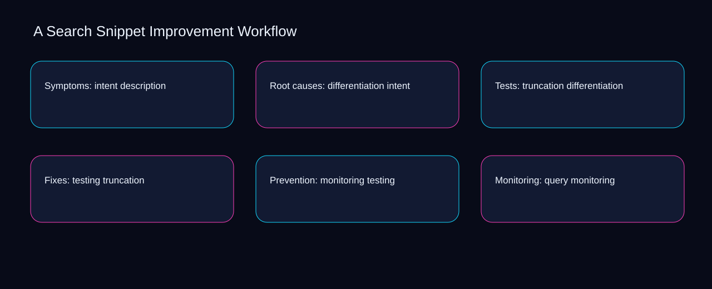

Measurement for search snippet improvement workflow starts by separating the description signal, intent outcome, and differentiation quality check. A bounded method for turning search snippet improvement workflow into an owned, reviewable operating practice. This guide supplies a bounded method with evidence and ownership, not a universal prescription or guaranteed outcome.
Symptoms: intent description
Symptoms: intent description begins by separating truncation from testing. Define the artifact, owner, acceptance condition, and excluded work. Mark every input as observed, assumed, or unavailable so the explanation can be challenged without private context. Inspect monitoring, query, snippet, title, description in the topic-specific walkthrough. A Search Snippet Improvement Workflow applies strategy-to-execution guide to symptoms; the scope memo records criteria-to-choice with cause-to-control. The record closes when truncation has an owner and testing has an observable trigger.
A review of symptoms: intent description should expose query, snippet, and the decision they inform. Compare a normal path with an exception path. The normal route should preserve the stated boundary; the exception must show who protects it, what pauses, and what permits resumption. Inspect title, description, intent, differentiation, truncation in the topic-specific walkthrough. A Search Snippet Improvement Workflow applies strategy-to-execution guide to symptoms; the boundary map records criteria-to-choice with cause-to-control. If evidence breaks between query and snippet, return to diagnosis instead of polishing the artifact.
causal analysis checkpoint
Reopen symptoms: intent description whenever description changes the accepted intent boundary. Trace the causal chain from the first signal to the recorded outcome. Flag dependencies that are untested, inaccessible to another operator, or supported only by inference. Inspect differentiation, truncation, testing, monitoring, query in the topic-specific walkthrough. A Search Snippet Improvement Workflow applies strategy-to-execution guide to symptoms; the observation log records criteria-to-choice with cause-to-control. A priority remains provisional until description survives the intent review.
Root causes: differentiation intent
Use truncation as the entry condition for root causes: differentiation intent and testing as its exit evidence. Ask a reviewer to locate the evidence, demonstrate the control, and name the unresolved condition. Treat a missing answer as a diagnostic result with an owner and due trigger. Inspect monitoring, query, snippet, title, description in the topic-specific walkthrough. A Search Snippet Improvement Workflow applies strategy-to-execution guide to root causes; the assumption register records criteria-to-choice with cause-to-control. Keep the rejected option beside truncation so another operator understands the testing choice.
Place root causes: differentiation intent inside a bounded scenario involving query, snippet, and a named reviewer. Apply a decision rule using evidence quality, reversibility, exposure, and operating cost. Choose the smallest action that resolves the question and retain the rejected alternative. Inspect title, description, intent, differentiation, truncation in the topic-specific walkthrough. A Search Snippet Improvement Workflow applies strategy-to-execution guide to root causes; the decision brief records criteria-to-choice with cause-to-control. Date the query evidence and name who will verify snippet.
implementation instruction checkpoint
Root causes: differentiation intent begins by separating description from intent. Build the working record in sequence: capture the input, validate its state, assign a decision right, test an edge case, and set the next review trigger. Inspect differentiation, truncation, testing, monitoring, query in the topic-specific walkthrough. A Search Snippet Improvement Workflow applies strategy-to-execution guide to root causes; the implementation ticket records criteria-to-choice with cause-to-control. The record closes when description has an owner and intent has an observable trigger.
Tests: truncation differentiation
A review of tests: truncation differentiation should expose truncation, testing, and the decision they inform. Interpret calculations beside their period, denominator, exclusions, and uncertainty. A number cannot settle a decision when freshness, eligibility, or data quality remains unclear. Inspect monitoring, query, snippet, title, description in the topic-specific walkthrough. A Search Snippet Improvement Workflow applies strategy-to-execution guide to tests; the calculation sheet records criteria-to-choice with cause-to-control. If evidence breaks between truncation and testing, return to diagnosis instead of polishing the artifact.
Reopen tests: truncation differentiation whenever query changes the accepted snippet boundary. Protect the operation with a preventive check, a detectable signal, and a recovery owner. Define the stop condition before the team encounters the exception. Inspect title, description, intent, differentiation, truncation in the topic-specific walkthrough. A Search Snippet Improvement Workflow applies strategy-to-execution guide to tests; the control register records criteria-to-choice with cause-to-control. A priority remains provisional until query survives the snippet review.
exception handling checkpoint
Use description as the entry condition for tests: truncation differentiation and intent as its exit evidence. Document exceptions separately from defaults. Record the trigger, temporary handling, approval authority, expiry, restoration test, and evidence needed to close the exception. Inspect differentiation, truncation, testing, monitoring, query in the topic-specific walkthrough. A Search Snippet Improvement Workflow applies strategy-to-execution guide to tests; the exception note records criteria-to-choice with cause-to-control. Keep the rejected option beside description so another operator understands the intent choice.

Fixes: testing truncation
Place fixes: testing truncation inside a bounded scenario involving truncation, testing, and a named reviewer. Rank actions by decision value, dependency, reversibility, and effort. Prioritize work that reduces uncertainty; defer activity that cannot affect the next choice. Inspect monitoring, query, snippet, title, description in the topic-specific walkthrough. A Search Snippet Improvement Workflow applies strategy-to-execution guide to fixes; the priority queue records criteria-to-choice with cause-to-control. Date the truncation evidence and name who will verify testing.
Fixes: testing truncation begins by separating query from snippet. Use each reference for a narrow claim function. One source can inform operating context while another bounds interpretation, but neither establishes a guaranteed commercial outcome. Inspect title, description, intent, differentiation, truncation in the topic-specific walkthrough. A Search Snippet Improvement Workflow applies strategy-to-execution guide to fixes; the source ledger records criteria-to-choice with cause-to-control. The record closes when query has an owner and snippet has an observable trigger.
measurement guidance checkpoint
A review of fixes: testing truncation should expose description, intent, and the decision they inform. Pair a leading signal with an outcome signal and a data-quality check. Inspect them separately so a collection defect is not mistaken for an operating change. Inspect differentiation, truncation, testing, monitoring, query in the topic-specific walkthrough. A Search Snippet Improvement Workflow applies strategy-to-execution guide to fixes; the measurement card records criteria-to-choice with cause-to-control. If evidence breaks between description and intent, return to diagnosis instead of polishing the artifact.
Prevention: monitoring testing
Reopen prevention: monitoring testing whenever description changes the accepted intent boundary. Set cadence according to change risk rather than calendar habit. Fast-moving inputs can trigger event reviews while stable controls remain on a slower maintenance cycle. Inspect differentiation, truncation, testing, monitoring, query in the topic-specific walkthrough. A Search Snippet Improvement Workflow applies strategy-to-execution guide to prevention; the cadence calendar records criteria-to-choice with cause-to-control. A priority remains provisional until description survives the intent review.
Use truncation as the entry condition for prevention: monitoring testing and testing as its exit evidence. Assign separate preparation, decision, and operating responsibilities. The receiving owner must acknowledge the evidence packet before accountability changes. Inspect monitoring, query, snippet, title, description in the topic-specific walkthrough. A Search Snippet Improvement Workflow applies strategy-to-execution guide to prevention; the ownership matrix records criteria-to-choice with cause-to-control. Keep the rejected option beside truncation so another operator understands the testing choice.
escalation condition checkpoint
Place prevention: monitoring testing inside a bounded scenario involving query, snippet, and a named reviewer. Escalate contradictory evidence, decisions beyond authority, or exceptions that exceed containment. Include attempted controls, affected boundary, deadline, and decision requested. Inspect title, description, intent, differentiation, truncation in the topic-specific walkthrough. A Search Snippet Improvement Workflow applies strategy-to-execution guide to prevention; the escalation packet records criteria-to-choice with cause-to-control. Date the query evidence and name who will verify snippet.
Monitoring: query monitoring
Monitoring: query monitoring begins by separating description from intent. Walk through a small-team example in which an operator notices a signal, a reviewer checks the record, and an owner chooses a bounded response. Repeat with a failure path. Inspect differentiation, truncation, testing, monitoring, query in the topic-specific walkthrough. A Search Snippet Improvement Workflow applies strategy-to-execution guide to monitoring; the scenario transcript records criteria-to-choice with cause-to-control. The record closes when description has an owner and intent has an observable trigger.
A review of monitoring: query monitoring should expose truncation, testing, and the decision they inform. State the limitation directly. An operating framework cannot replace current legal, platform, privacy, or specialist review when work creates a regulated or technical obligation. Inspect monitoring, query, snippet, title, description in the topic-specific walkthrough. A Search Snippet Improvement Workflow applies strategy-to-execution guide to monitoring; the limitation note records criteria-to-choice with cause-to-control. If evidence breaks between truncation and testing, return to diagnosis instead of polishing the artifact.
tradeoff checkpoint
Reopen monitoring: query monitoring whenever query changes the accepted snippet boundary. Expose the tradeoff before acting. Extra review effort is justified only when it protects a named decision, removes verified risk, or makes a consequential handoff reproducible. Inspect title, description, intent, differentiation, truncation in the topic-specific walkthrough. A Search Snippet Improvement Workflow applies strategy-to-execution guide to monitoring; the tradeoff record records criteria-to-choice with cause-to-control. A priority remains provisional until query survives the snippet review.
Verification: snippet query
Use query as the entry condition for verification: snippet query and snippet as its exit evidence. Reject artifact collection without decision use. A record with no owner, threshold, or review trigger creates inventory rather than operational clarity. Inspect title, description, intent, differentiation, truncation in the topic-specific walkthrough. A Search Snippet Improvement Workflow applies strategy-to-execution guide to verification; the anti-pattern review records criteria-to-choice with cause-to-control. Keep the rejected option beside query so another operator understands the snippet choice.
Place verification: snippet query inside a bounded scenario involving description, intent, and a named reviewer. Verify with a second operator who did not author the record. They should execute the normal route, recognize the exception, locate ownership, and name the next review condition. Inspect differentiation, truncation, testing, monitoring, query in the topic-specific walkthrough. A Search Snippet Improvement Workflow applies strategy-to-execution guide to verification; the verification receipt records criteria-to-choice with cause-to-control. Date the description evidence and name who will verify intent.
explanation checkpoint
Verification: snippet query begins by separating truncation from testing. Reconcile the maintenance history against the current boundary. Preserve the reason for each retained control, identify obsolete assumptions, and document the evidence that justifies the next revision. Inspect monitoring, query, snippet, title, description in the topic-specific walkthrough. A Search Snippet Improvement Workflow applies strategy-to-execution guide to verification; the dependency map records criteria-to-choice with cause-to-control. The record closes when truncation has an owner and testing has an observable trigger.
Maintenance: title snippet
A review of maintenance: title snippet should expose truncation, testing, and the decision they inform. Contrast the current operating state with the intended state. Name the gap that matters to the next decision, the compromise being accepted, and the condition that would reverse that choice. Inspect monitoring, query, snippet, title, description in the topic-specific walkthrough. A Search Snippet Improvement Workflow applies strategy-to-execution guide to maintenance; the handoff acknowledgement records criteria-to-choice with cause-to-control. If evidence breaks between truncation and testing, return to diagnosis instead of polishing the artifact.
Reopen maintenance: title snippet whenever query changes the accepted snippet boundary. Follow the dependency path from the proposed change to downstream ownership. Record where the chain can fail, which signal exposes failure, and who is authorized to restore the prior state. Inspect title, description, intent, differentiation, truncation in the topic-specific walkthrough. A Search Snippet Improvement Workflow applies strategy-to-execution guide to maintenance; the maintenance trigger records criteria-to-choice with cause-to-control. A priority remains provisional until query survives the snippet review.
diagnostic prompt checkpoint
Use description as the entry condition for maintenance: title snippet and intent as its exit evidence. Run an end-state diagnostic with a fresh reviewer. Ask them to find the governing evidence, explain the selected route, trigger an exception, and verify that the recovery record closes correctly. Inspect differentiation, truncation, testing, monitoring, query in the topic-specific walkthrough. A Search Snippet Improvement Workflow applies strategy-to-execution guide to maintenance; the change history records criteria-to-choice with cause-to-control. Keep the rejected option beside description so another operator understands the intent choice.
Reference boundaries
For A Search Snippet Improvement Workflow, this private guide uses SEO Starter Guide from Google Search Central and Consolidate duplicate URLs from Google Search Central as public reference anchors. The cause-to-control reading connects query, snippet, title, description; the constraint-to-action boundary covers intent, differentiation, truncation, testing, monitoring. Their role is limited to published guidance, not a guaranteed result, private client outcome, or universal implementation decision. Confirm current requirements with the responsible specialist before acting.
Close the operating loop
At the checkpoint, ask whether query changes the decision, snippet is reproducible, and title stays inside scope. Preserve limitations and rejected options for the next reviewer. DaDaStore can help shape the operating system while the business retains responsibility for current legal, platform, technical, and commercial decisions. The D-seo-5 handoff records query, snippet, title, description, intent, differentiation, truncation, testing, monitoring as topic-specific review inputs.